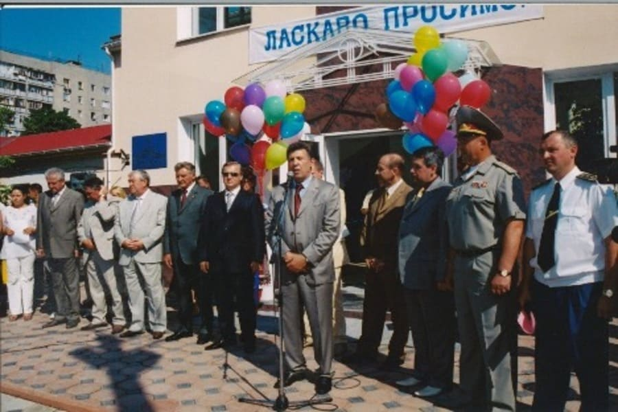
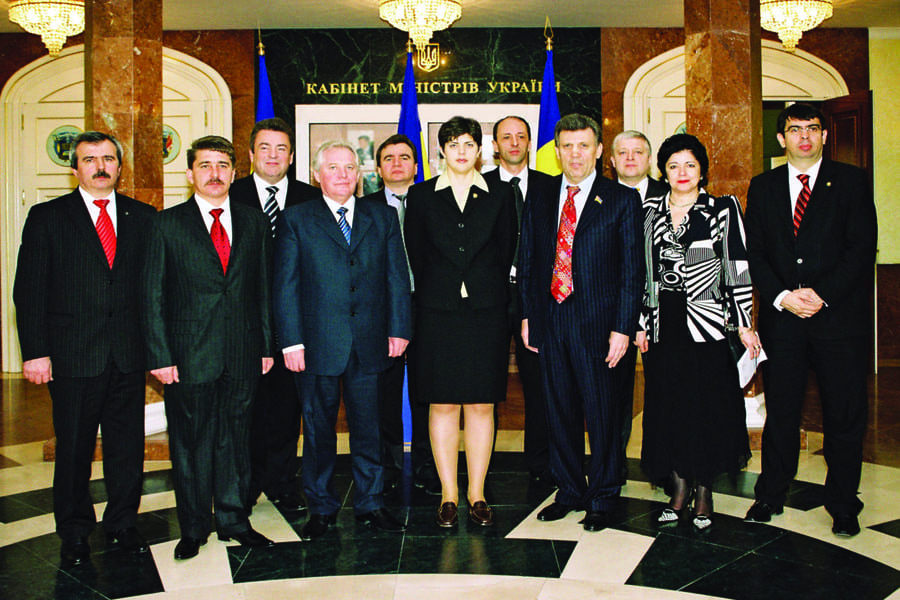

2001 рік. Візит до Одеської юридичної академії
Генерального прокурора Республіки Болгарія
Ніколи Філчева

2005 рік. Відкриття сучасного лекційного корпусу
за адресою Піонерська 7

2006 рік. Завершення будівництва навчального корпусу «Компʼютерний дім».
На відкритті присутні голова Вищого адміністративного суду України,
голови Одеської обласної державної адміністрації та Одеської обласної ради

2006 рік. Присвоєння президенту Міжнародного
кримінального суду Філіпу Кіршу звання
почесного доктора (Doctor Honoris causa) ОНЮА

2007 рік. Зустріч колективу ОНЮА із Генеральним прокурором
України О. І. Медведьком та генеральними прокурорами Молдови і
Румунії

2008 рік. У стінах Одеської національної юридичної академії
пройшов V Міжнародний турнір зі швидких шахів. На фото зображена
історична партія між Віктором Корчним та Анатолієм Карповим